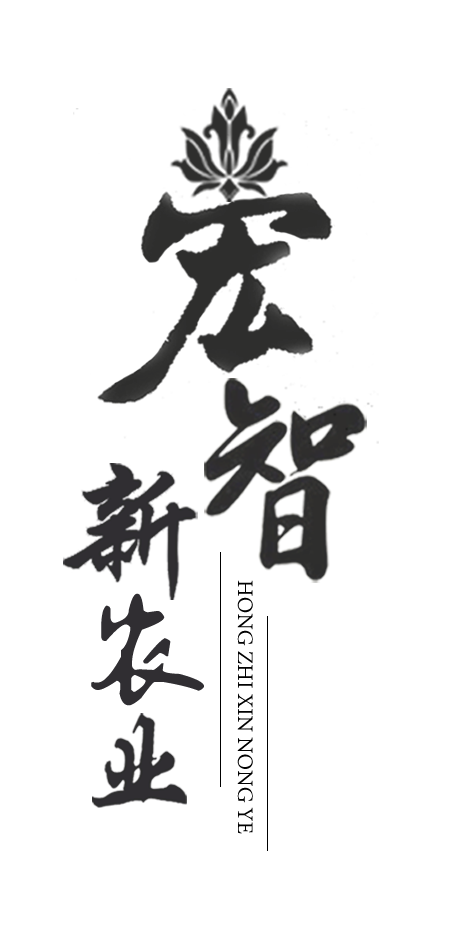
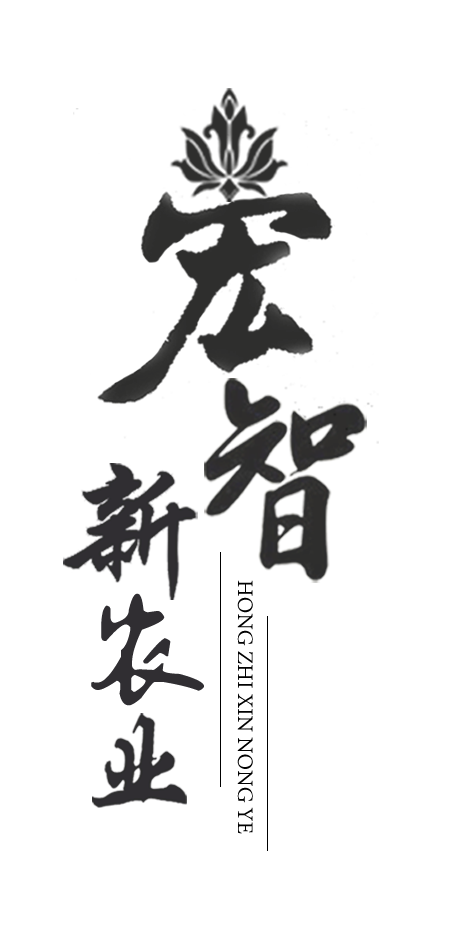
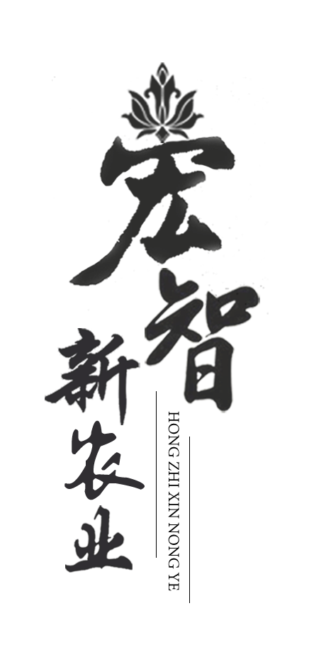
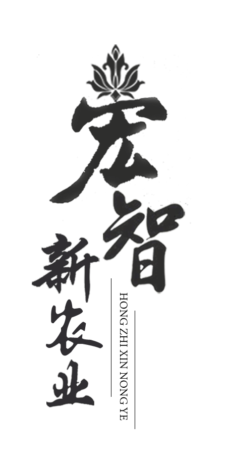

农业基地
应用循环农业园区模式，品种专用化、生产标准化、操作机械化、调控自动化，实现资源节约、环境友好、可持续发展。
休闲农业
定位于中高端、多元化市场需求，积极开发农业的生产、生活、生态、示范功能，提供观光、休闲、度假、娱乐、健身等多项服务。

会展农业
以会议、展览、展销、节庆、农事等活动形式为载体，通过农业会展活动，实现了产业的有机融合，拉长农业产业链，提升农业附加值。
综合旅游
通过创意把文化艺术、农业技术、农副产品和农耕活动有机结合起来，打造婚纱摄影、艺术创作、影视拍摄为一体的综合型现代农业旅游观光区
牡丹籽油
世界上最好的油，植物油中的珍品，是中国独有的健 康保健食用油脂。
牡丹花蕊茶
含有大量的黄酮类化合物，能显著抑制清除强致癌物质亚硝酸盐的生成，也是常见的心脑血管疾病的治疗药物。
丹皮
牡丹皮，中药材，归心、肝、肾经，具有清热凉血、活血化淤、退虚热等功效。